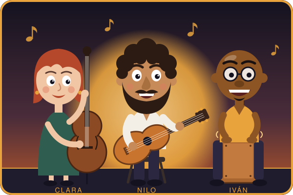
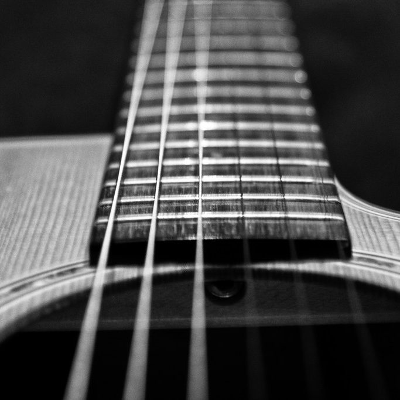

Concierto acústico Raíz de agua
Sala La Cúpula, Valencia. 21:00 h
Cuerdas que cruzan océanos.
Guitarrista y compositor. Flamenco, jazz y candombe desde Valencia.
Ver próximos conciertosNilo Sur creció entre la guitarra flamenca de su abuelo andaluz y los discos de jazz y bossa nova que llegaban a casa desde Montevideo, la ciudad natal de su madre. De esa mezcla nació un sonido propio: compases de bulería que se abren a armonías de jazz y ritmos de candombe.
Formado en el Conservatorio Superior de Música de Valencia, hoy compone para guitarra sola y para su trío, Nilo Sur Trío, con Clara Benet al contrabajo e Iván Roca a la percusión. En directo combina la intimidad de una guitarra acústica con la improvisación, y cada concierto es distinto al anterior.
Se gradúa en guitarra en el Conservatorio Superior de Música de Valencia.
Funda Nilo Sur Trío con Clara Benet (contrabajo) e Iván Roca (percusión).

Publica su primer álbum, Raíz de agua, grabado de forma independiente.

Primer premio en el Certamen Nacional de Guitarra Contemporánea.
Gira de 15 conciertos por España y Uruguay.
Publica su segundo álbum, Mareas del Sur.
Sala La Cúpula, Valencia. 21:00 h
Teatro del Puerto, Barcelona. 20:30 h
Café Central del Sur, Madrid. 21:30 h
Auditorio Mar Abierto, Alicante. 19:00 h